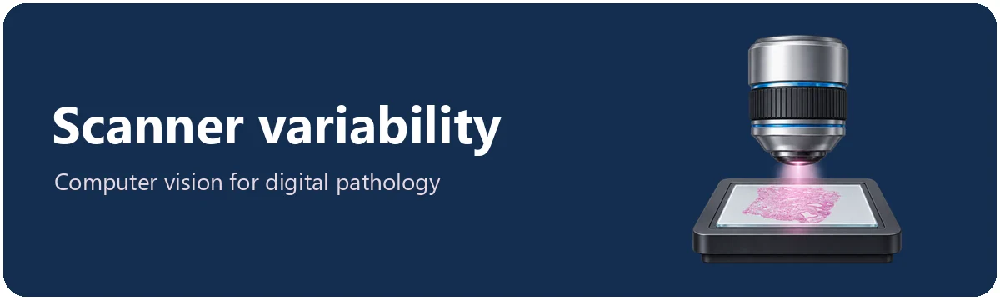

Scanner variability and harmonization in digital pathology
The same tissue can look different when digitized on different scanners. For my master’s research at Johns Hopkins University, I developed a workflow to register whole-slide images across scanners so that corresponding tissue regions could be compared.
I studied how scanners affect color, foundation-model embeddings, and segmentation across scanners. I investigated image harmonization before feature extraction and feature harmonization directly in embedding space. One comparison used the Olympus SLIDEVIEW VS200 and Hamamatsu NanoZoomer S210.